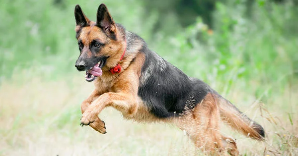

Conoce tu mascota
El pastor alemán u ovejero alemán (en alemán: Deutscher Schäferhund) es una raza canina que proviene de Alemania.La raza es relativamente nueva, ya que su origen se remonta a 1899. Forman parte del grupo de pastoreo, ya que fueron perros desarrollados originalmente para reunir y vigilar ganado. Desde entonces, sin embargo, gracias a su fuerza, inteligencia, capacidad de entrenamiento y obediencia, los pastores alemanes de todo el mundo son a menudo la raza preferida para muchos otros tipos de trabajo, como son: perro policía, perro guardián, guía de ciegos, animal de rescate, y otros, según el uso que le den las fuerzas y cuerpos de seguridad y el ejército. En muchos países incluso cuentan con unidades específicas denominadas K-9.
Origenes
Sus orígenes se remontan a finales del siglo XIX, cuando en Alemania se inició un programa de crianza para guarda y protección de los rebaños de carneros en contra de los lobos. El capitán de caballería del ejército alemán, Maximilian von Stephanitz, es considerado el padre de la raza. Más tarde, tras la aparición de la Asociación de Amigos del Pastor Alemán en 1899, se inició una selección de ejemplares cuyos cruces mejoraron tanto el aspecto psíquico como físico del animal. El primer ejemplar inscrito Horand von Grafrath fue un animal vigoroso, de firme carácter, pelaje grisáceo y aspecto lobuno que demostró ser un semental con los rasgos que Von Stephanitz buscaba. En el primer encuentro se transmitieron esos rasgos deseables a los perros sucesores, y se reforzaron con las normas cuidadosas de cruce selectivo entre miembros del mismo linaje de este primer criador; una práctica que buscaba destacar y potenciar las características deseables por medio de una determinada gestión genética. Von Stephanitz buscó de forma primordial el aspecto práctico y de trabajo de la raza. Desde el principio, la forma en el pastor alemán no debería desviarle de su funcionalidad zootécnica. Von Stephanitz previó una primera amenaza a la validez de la raza como animal de trabajo cuando la sociedad humana se transformó de una base principalmente agrícola y ganadera a una economía industrializada. En una primera fase, persuadió al Gobierno alemán para que aceptara a la raza en trabajos de policía. Este fue el principio de la asociación de la raza con las fuerzas de la ley y con la utilización militar. Pronto las cualidades de inteligencia, fiabilidad y resistencia del animal, los aspectos principales de su carácter y su existencia en la historia, le garantizaron su utilización en muchos papeles importantes, siendo uno de esos papeles más nobles como perro guía para los ciegos. Esta raza fue utilizada como perro rastreador durante la Segunda Guerra Mundial por el ejército alemán y policías. De hecho, los servicios prestados durante las dos guerras mundiales le otorgaron un respeto y admiración a nivel mundial.